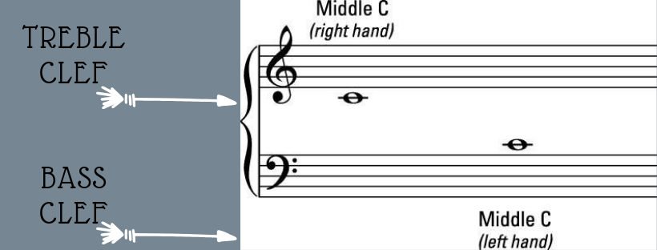
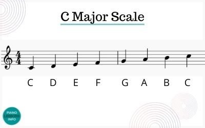
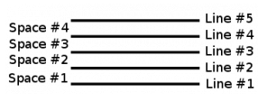
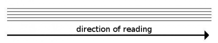
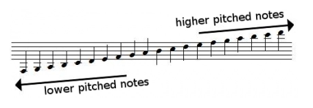

What is Sight Reading?
Sight Reading is actively reading a piece of music without the help of our muscle memory. Sight Reading is not an inherent gene that musicians are born with, but a skill that can be improved and developed through practice. Sight reading has a steep learning curve as many individuals have trouble even grasping what the notes mean and quit before mastering the basics. That being said, sight reading is such a crucial aspect of music.
What are Clefs?
Clefs simply is a type of music notation or symbol that is placed at the beginning of the staff. This will indicate the specific pitch of certain notes. The two most common clefs today are Treble and Bass Clef.

The treble clef is a symbol denoted for all of the notes
that are above the middle C. This is also known as the G
clef since the curl of the clef encircles around the line
where the G note falls on. For keyboard or piano
instruments, the treble clef would be displayed on the upper
half of the staff.
The bass clef is a symbol denoted for all of the notes that
are below the middle C. This is also known as the F clef
since the two dots in the bass clef are between the line
where the F note falls on. For keyboard or piano
instruments, the bass clef would be displayed on the lower
half of the staff.
C Major:
Spaces and Lines in the Staff
The grid in sheet music is called the staff, which is typically composed of 5 horizontal lines and 4 spaces. The figure below shows the lines and spaces that are numbered from bottom to top. Depending on the note, some music notes can rest between two of the lines on the staff while others can rest on top of a line instead.
Music Notes
Music notes are typically read from left to right on the staff, like a book.
Notes with a lower pitch are normally found at the bottom of the staff, while higher notes can be found at the top of the staff. In the case that the notes do not happen to rest within the music staff, ledger lines are used to extend the staff. There can be as many ledger lines needed for a singular music note, as there is no limit to the number of ledger lines that can appear on the music staff.
Acronyms/Mnemonic
Note reading can sometimes be difficult especially when the player can not remember the letter that is associated with each note, so acronyms or mnemonics were created to allow prospective music players to remember these notes better. Here are examples of a couple of mnemonics that some musicians use today:
- FACE (Between the lines from bottom to top treble clef)
- Every Good Boy Does Fine/Every Good Boy Deserves Fudge (On the line from bottom to top treble clef)
- All Cows Eat Grass (Between the line from bottom to top bass clef)
- Good Boys Do Fine Always (On the line from bottom to top bass clef)